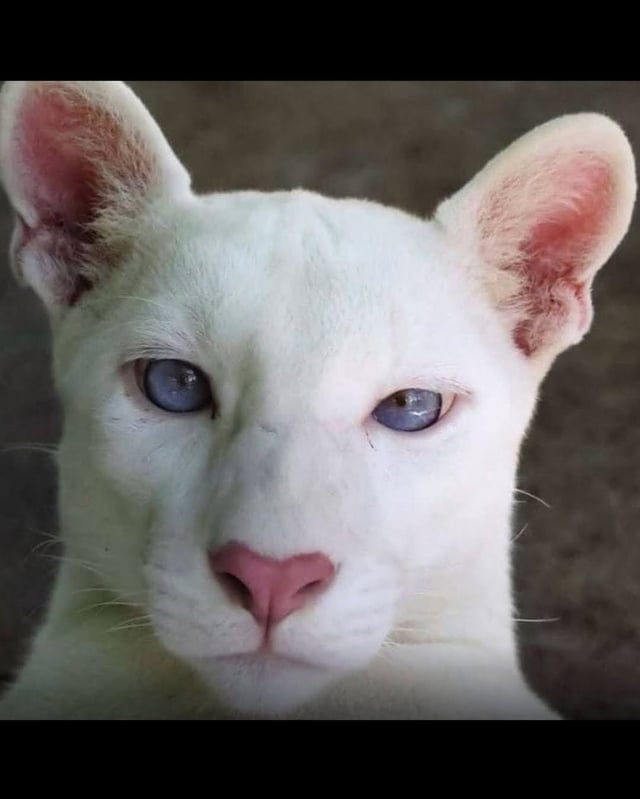
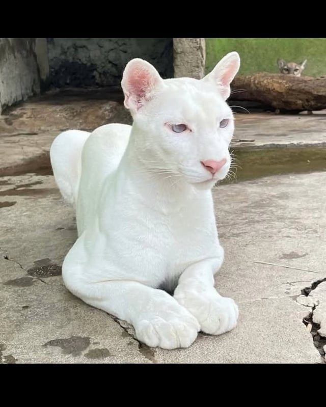
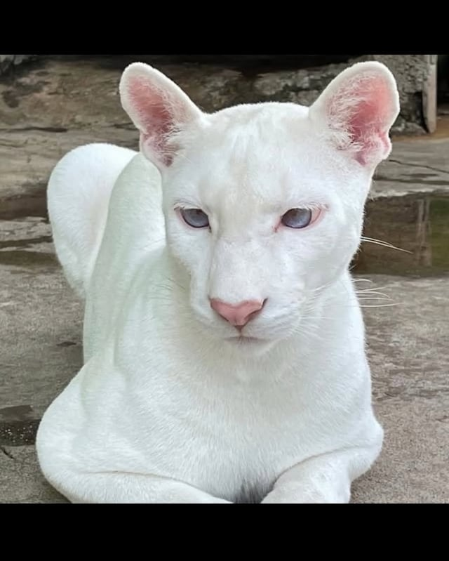
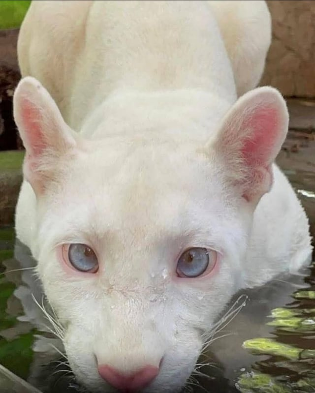
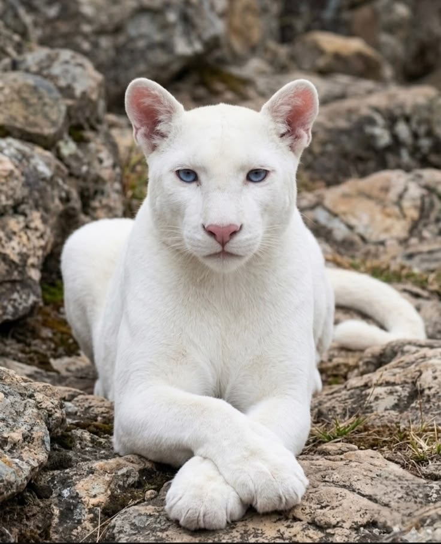

알빠노





알빠노
오...알비노 퓨마는 첨본당
가능
핑크...
핑크 코 귀엽다
혹시 암컷인가요?
그냥 고양이같네 ㅋㅋ
이리와서 앉아봐라
새초롬
톰이 좋아하는 고양이 닮았는데?
길쭉해요
알삐노?
가능
보지 핑크일듯
빅냥이
다소곳하네
이쁘네
영애님.. 여기서 있으시면 위험합니다. 라고 말해주는 진돗개 경호원이 옆에 있을거 같다 ㅋㅋ
섹스하네
알비노는 눈이 빨간 줄 알았는데 항상 그런 건 아니라네
ㅋㅋㅋ졸귀다
빅떼껄룩
흐음..섹시한데